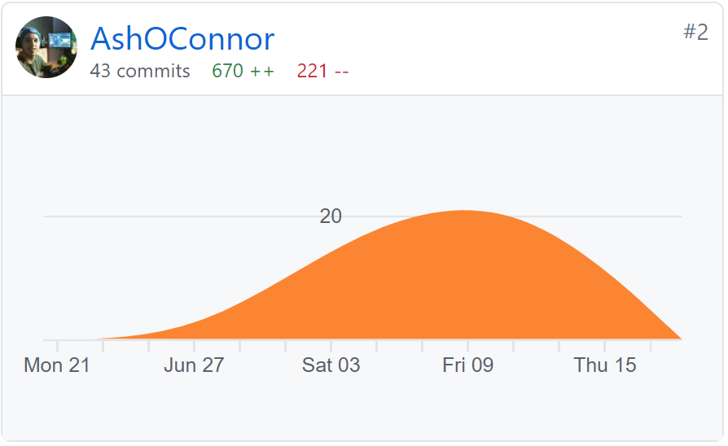
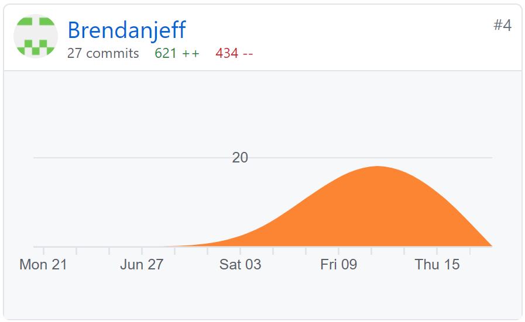
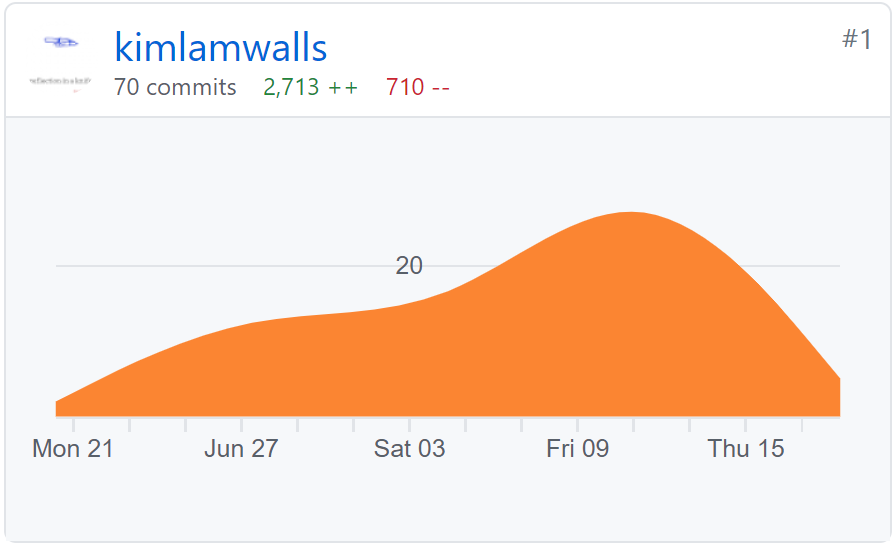
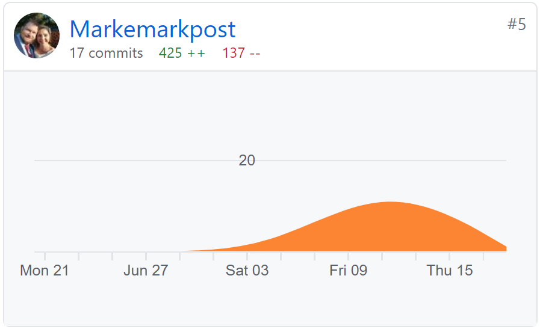
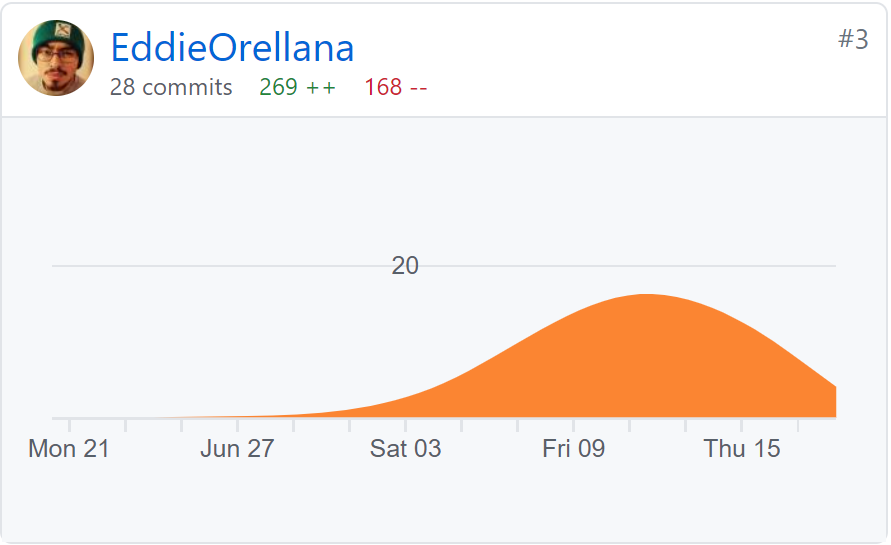
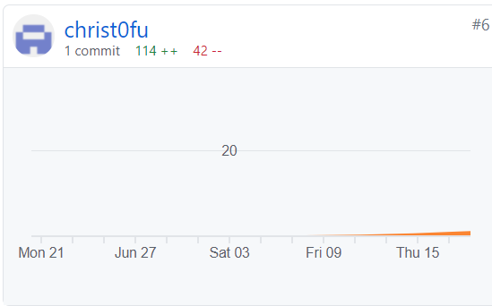

In Assignment 3 overall, the completion of this assignment went well for Group 30. We do believe as a group there have been significant improvements since the first assignment we completed as a group. The first area we saw improvement in was the overall group communications throughout this entire assignment. Multiple meetings were organised by our project leader Mark throughout each week in the completion of this assignment. Also, communications were kept constant across various communication platforms such as Discord, Teams chat and emails. All operations and agreements were made clear and constantly recalled to all members of the group throughout the course of the project.
Setting deadlines, was another area in which Group 30 has improved dramatically from our previous experience. Mark has done an excellent job to organise and make clear each expectation required from each member of the team and when drafts have been required to be presented by the team. What we did find surprising, was how much smoother the entire process became just by setting deadlines for drafts. It gave us more time to edit and make changes to the overall work that had been completed, allowing our team to feel in more control and less stressed about the assignment's deadline.
Another excellent improvement in our group has been real time collaborations. Through the past few weeks' members have been getting together to carry our tasks and complete sections while collaborating with one another in real time. Teams has contributed to making this progress much easier for all members, we have been able to talk in a group conference on Discord while also looking and working on the same documents. This has allowed completion of sections of the work to be done much easier and faster than to the previous assignment.
We have learnt a great deal working together in Technodrome Inc and collaborating with one another, we still believe that the areas that could have been improved more on is being more responsible to complete tasks when we have a set deadline or made a commitment to a set date. What we have taken from this experience is that equal collaboration and effort in the work, makes the greatest difference. By working together and completing deadlines when required, staying in constant communications, all this when done by everyone it improves and motivates the team. This is a lesson we hope all members will take from this and apply it to future work and collaborations.






Working on Assignment 3 I do believe that what went very well was the collaboration within team members to team members. I was incredibly surprised to see how beneficial it was in the completion of the work overall. During this assignment I thoroughly enjoyed working closely with Kim and Mark in our collaboration sessions and I'm assisting one another in completing required tasks.
Through this experience I have learnt the importance of contributing and complete each allocated task within the group. By doing this I have seen the benefits and more eased atmosphere it can bring to an ongoing project, it has also shown me to be more responsible in the completion of my allocated sections. I do believe that too is the area in which we do need to improve on, to not leave tasks to the last minute and to complete tasks when required by the set deadlines.
Overall, working with this team has been a wonderful experience for me. All the members have been a pleasure to work and collaborate with, they all have so much potential to do wonderful things in the future and I wish them the very best. I hope to have the opportunity to work with them again.
I began this group assignment with a healthy dose of scepticism, not because of any one individual, but purely due to the vast physical distance between us all and some of the issues this can potentially cause. In the beginning I saw this as being detrimental to our end goal.
I was wrong, I was very wrong, and I was surprised to see that it had no discernible impact on our interactions or the group's ability to work as a whole.
Within short order we were up and running on discord, had a Teams group set up, GitHub Repository up and running and team meetings planned. We, as a team, just worked. We were incredibly fortunate that when we went to sort out the roles and workloads for the assignment, everyone had already completed a bit of solo prior planning, so task delegation was quick and painless.
Apart from the assignment due date, and “hang on and I'll do that now”, we had very little in the way of organised deadlines. While this approach worked for us without issue in this instance, this is an area we, as a group, will need to improve on for our own benefit as I do not see this method working on more in-depth assignments.
Technodrome Inc. Has come together quite well, and all members have been happy to lend a hand with any issues/questions that have arisen.
Assignment 3 has been a pleasurable experience collaborating with the team. What went well from day one was assigning Mark to be our project leader of the team. This helped the team create a structure and have suitable deadlines for draft content and final deadlines for our finished product. It also implemented a high level of communication between team members through Microsoft Teams & Discord, helping with collaboration.
Although deadlines were put into place, it was disappointing that certain members still didn’t understand the fact that these are rules that we all agreed to during our first meeting. It places a burden on the team. This is something that we can still improve on as a team.
The main thing that surprised me in this assignment compared to previous assignments was the amount of interaction each group member had with each other asking if anybody needed help within the group and throwing ideas around it was an absolute pleasure to see.
I have learnt that being involved within an efficient team helps take the stress off your shoulders because everybody wants to do the best for one another.
I would like to thank my group for the amazing experience that I have had working throughout these projects. I hope to be able to work with you all in the future and wish you all the best for the future.
I was immediately impressed by Kim; he took the reins from day one and at least in my mind has been a great project leader. The majority of the group has been good at communicating, we have used Discord as our day-to-day form of casual communication while keeping the more professional side to Microsoft teams.
It has been difficult for me to adapt to a team in which everybody has a different schedule, I have worked in many teams before, mainly where I have been the group lead, this has allowed me to become accustomed to setting deadlines for everyone involved. In this case I have needed to learn patience, allowing everybody to work at their own pace.
Although our communication has been good, I believe it could be better, in future I think we can start to add structure to better the team and set deadlines for ourselves.
It was surprising to me how much we achieved after only a few small meetings, it was also great to have everybody working and talking on discord, having an open channel where you can just ask a question or get a second pair of eyes to look over something is a nice way of working.
From the outset, I had my hesitations and concerns in working as a team over distance. Working with strangers on something that is new and unfamiliar to most of us. I put in a bit of effort to get familiar with the tools early and shared a few things with the group. Something I can sometimes struggle with. From our first meeting it was a great feeling to see the rest of the team jump on board with enthusiasm and build up a rough plan. Partly because we all had different schedules and having just met each other we were quite relaxed with deadlines and expectations.
This worked well for the most part, however perhaps a stricter set of expectations and some more decisive instructions could have increased our productivity and reduced some occasional communication or productivity problems.
I have learned and was pleasantly surprised that people can be receptive to simple efforts made to make things easier for others, and that some simple overall coordination can go a long way to making larger projects less stressful.
This was my first time working in such a big team for an assignment. It was a challenging and exciting experience from the start. Personally I was not as active in my team as I could have been. I liked the idea that we would all have individual tasks, as it lets me focus on specific areas with more attention to detail. I found I was behind on what other team members were doing because I only had particular interest in my areas. I wish I Could have been more collaborative as to experience the other sides of the task that paid little attention to. I appreciate my team, they have all worked hard and I am grateful. I want to in the future be a more effective team member and will use this 2nd assignment as a learning experience.